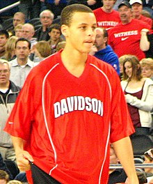

Stephen Curry Wiki Page
Early Life

Curry is the son of Sonya and Dell Curry. He was born in Akron, Ohio, at Summa Akron City Hospital, while his father was a member of the Cleveland Cavaliers.[7][8] He grew up in Charlotte, North Carolina, where his father spent most of his NBA career with the Charlotte Hornets.[9] Dell often took Curry and his younger brother Seth to his games, where they would shoot with the Hornets during warm-ups.[10] The family briefly moved to Toronto, where Dell finished out his career as a member of the Raptors.[9] During this time, Curry played for the Queensway Christian College boys' basketball team, leading them to an undefeated season.[11][12] He was also a member of Toronto 5–0, a club team that plays across Ontario,[13][14] pitting him against fellow future NBA players Cory Joseph and Kelly Olynyk.[14] Curry led the team to a 33–4 record, en route to winning the provincial championship.
College career
After Dell's retirement, the family moved back to Charlotte and Curry enrolled at Charlotte Christian School, where he was named all-conference and all-state, and led his team to three conference titles and three state playoff appearances. Because of his father's storied career at Virginia Tech, Curry wanted to play college basketball for the Hokies, but was only offered a walk-on spot due in part to his slender 160-pound frame.[16] He ultimately chose to attend Davidson College, who had aggressively recruited him from the tenth grade.[17]
Freshmen season
Before Curry even played in his first game for the Wildcats, head coach Bob McKillop praised him at a Davidson alumni event, saying: "Wait 'til you see Steph Curry. He is something special."[18] In his first collegiate game against Eastern Michigan, Curry finished with 15 points but committed 13 turnovers. In the next game against Michigan, he scored 32 points, dished out four assists, and grabbed nine rebounds. Curry finished the season leading the Southern Conference in scoring with 21.5 points per game. He was second in the nation among freshmen in scoring, behind only Kevin Durant of Texas.
Sophomore season
In his sophomore season in 2007–08, Curry had grown to his adult height of 6 ft 3 in (1.91 m) and again led the Southern Conference in scoring, averaging 25.5 points per game while adding 4.7 rebounds per game and 2.8 assists per game. He led the Wildcats to a 26–6 regular-season record and a 20–0 conference record. As a result of Curry's exceptional play, Davidson earned its third straight NCAA tournament bid. On March 21, 2008, Davidson matched up with seventh-seeded Gonzaga. Gonzaga led by 11 points early in the second half but Curry went on to score 30 points in the half[24] to push Davidson to their first NCAA Tournament win since 1969 with a score of 82–76. Curry ended the game with 40 points while also going 8-for-10 from three-point range.[25]
Professional career
Golden State Warriors (2009–present)
Early years (2009-2012)
On June 25, 2009, Curry was selected as the seventh overall pick in the 2009 NBA draft by the Golden State Warriors. [52] He appeared in 80 games (77 starts) during the 2009–10 season, averaging 17.5 points, 4.5 rebounds, 5.9 assists, and 1.90 steals in 36.2 minutes.[53] His second half of the season vaulted him into the rookie of the year race.[54] He was named Western Conference Rookie of the Month for January, March, and April, finishing as the only Western Conference rookie to win the award three times.[53] He finished runner-up for the NBA Rookie of the Year Award behind Tyreke Evans[54] and was a unanimous NBA All-Rookie First Team selection, becoming the first Warriors player since Jason Richardson in 2001–02 to earn All-Rookie First Team honors
First All-Star and playoff appearance (2012-2014)
Prior to the start of the 2012–13 season, Curry signed a four-year, $44 million contract extension with the Warriors.[60][61] At the time, many basketball writers considered the move risky for Golden State because of Curry's injury history.[62] Over the course of the year, Curry and backcourt teammate Klay Thompson gained a reputation for their perimeter scoring, earning them the nickname the "Splash Brothers".[63] In 2012–13, Curry appeared in 78 games (all starts), averaging career highs of 22.9 points (seventh in NBA) and 6.9 assists to go with 4.0 rebounds and 1.62 steals in 38.2 minutes.[53] He established a new NBA single-season three-point record with 272 three-pointers, eclipsing the previous mark set by Ray Allen (269 in 2005–06), doing so on 53 less attempts than Allen did with Seattle.